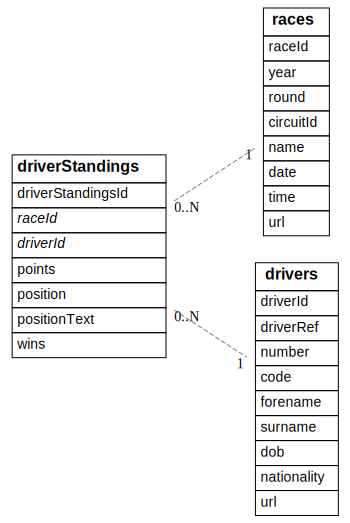

Code In PostgreSQL: Combining data from multiple tables with INNER JOIN
This series of articles
This is the third of the Code in PostgreSQL series of articles.
Articles in this series
- You can do lots with just IN, ORDER BY and LIMIT
- You can use WITH to name specific parts of SQL
- Combining data from multiple tables with INNER JOIN
- A NoSQL developer might not know about: GROUP BY ( Soon to be published )
- Sub select ( Soon to be published )
- Variables ( Soon to be published )
- Prepare JSON ( Soon to be published )
- Create Function (and testing it) ( Soon to be published )
- Custom Aggregates ( Soon to be published )
The reason why SQL is so important
When developing systems we often have a choice of writing code (NodeJS, C#, Python or PHP etc) or SQL. I believe that sometimes the decision to write code is taken without fully evaluating how much of the task could be offloaded to SQL.
In this series of articles I wish to show the huge benefits of using and learning SQL by examining progressively more difficult scenarios with increasing amounts of SQL knowledge. In doing this I hope to illustrate that sometimes large amounts of extra code is written for what SQL can achieve quicker, with less complexity and more readability.
To be more specific, we should try to follow the rule of least power more often.
About the Ergast data set
For this series of articles we will be using the Ergast data set, which is a provided under the Attribution-NonCommercial-ShareAlike 3.0 Unported Licence.
Setting up the Ergast database within PostgreSQL
To set up the Ergast database within PostgreSQL I did the following:
I allowed psql and friends to work without me having to put in a password all the time by configuring the PostgreSQL environmental variables.
export PGUSER=postgres PGPASSWORD=postgres PGDATABASE=postgres PGHOST=127.0.0.1
Then import the Ergast database. NOTE: At the time of writing I was unable to install the PostgreSQL version.
wget -O /tmp/f1db_ansi.sql.gz http://ergast.com/downloads/f1db_ansi.sql.gz
cat /tmp/f1db_ansi.sql.gz | \
gzip -d | \
sed 's/int(..)/int/' | \
sed 's/ \+AUTO_INCREMENT//' | \
sed "s/\\\'/\'\'/g" | \
sed 's/UNIQUE KEY \"\(\w\+\)\"/UNIQUE /' | \
sed 's/^ *KEY .*(\"\(.*\)\")/CHECK ("\1" > 0)/' | \
sed 's/ date NOT NULL DEFAULT .0000.*,/ date,/'| psql
The Aim
At the end of the last article we had the following dataset:
| points | driverId | year |
|---|---|---|
| 363 | 1 | 2017 |
| 317 | 20 | 2017 |
| 305 | 822 | 2017 |
| 205 | 8 | 2017 |
| 200 | 817 | 2017 |
| 168 | 830 | 2017 |
| 100 | 815 | 2017 |
| 87 | 839 | 2017 |
| 54 | 832 | 2017 |
| 43 | 13 | 2017 |
| 43 | 807 | 2017 |
| 40 | 840 | 2017 |
| 28 | 154 | 2017 |
| 19 | 825 | 2017 |
| 17 | 4 | 2017 |
| 13 | 838 | 2017 |
| 8 | 835 | 2017 |
| 5 | 826 | 2017 |
| 5 | 836 | 2017 |
| 0 | 18 | 2017 |
| 0 | 814 | 2017 |
| 0 | 828 | 2017 |
| 0 | 841 | 2017 |
| 0 | 842 | 2017 |
| 0 | 843 | 2017 |
I would like to augment this dataset with the names of the drivers, so the results would look something like the following:
| points | driverId | forename | surname | year |
|---|---|---|---|---|
| 363 | 1 | forename | surname | 2017 |
Where forename and surname have the real values in.
Table Structure

Table Data
races
| raceId | year | round | circuitId | name | date | time | url |
|---|---|---|---|---|---|---|---|
| 971 | 2017 | 3 | 3 | Bahrain Grand Prix | 2017-04-16 | 15:00:00 | https://en.wikipedia.org/wiki/2017_Bahrain_Grand_Prix |
| 977 | 2017 | 9 | 70 | Austrian Grand Prix | 2017-07-09 | 12:00:00 | https://en.wikipedia.org/wiki/2017_Austrian_Grand_Prix |
driverStandings
| driverStandingsId | raceId | driverId | points | position | positionText | wins |
|---|---|---|---|---|---|---|
| 64795 | 856 | 1 | 196 | 5 | 5 | 2 |
| 64810 | 856 | 3 | 67 | 7 | 7 | 0 |
drivers
| driverId | driverRef | number | code | forename | surname | dob | nationality | url |
|---|---|---|---|---|---|---|---|---|
| 2 | heidfeld | HEI | Nick | Heidfeld | 1977-05-10 | German | http://en.wikipedia.org/wiki/Nick_Heidfeld | |
| 4 | alonso | 14 | ALO | Fernando | Alonso | 1981-07-29 | Spanish | http://en.wikipedia.org/wiki/Fernando_Alonso |
Implementing the JavaScript
If we think about what code we had in the previous article there are two peices of functionality we're missing. These are:
- The ability to find a row in the
driverstable that matches a row in our current result set. - The ability to mix/join this row from
driverswith our current results.
I'm going to aim to write code that is highly reusable and also still performs well on very large data sets.
Finding drivers efficiently
The obvious answer to finding a driver from a list of drivers would be to use Array.find()... something lie the following?
const assert = require("assert");
const drivers = [
{ driverId: 2, forename: "Lewis", surname: "Hamilton" },
{ driverId: 14, forename: "Fernando", surname: "Alonso" }
];
/**
* Find one `row` within rows that has `value` within the specified `column`.
*
* @param column string The property within the rows to look within.
* @param value number|string The value that column (above) should be.
* @param rows Row[] An array of objects to represent rows.
* @return Row
*/
function arrayFind(column, value, rows) {
return rows.find((row) => {
return row[column] == value;
});
}
assert.equal(arrayFind("driverId", 14, drivers).forename, "Fernando");
module.exports = arrayFind;
This is certainly a reusable piece of code and was easy to write and hopefully for you to understand.
I can see two problems here though.
The first problem is performance. When we need to look up a driverId we need to scan all the rows in drivers up until the point we find the correct one. We will be doing this for all of the (hypothetically millions of) driverId we want to look up. So I'm pretty sure the performance characteristics of this is not great.
The other short coming I can see is that it will only ever retreive one row. This is often what we want to acheive, but not always. An example of when this is not enough is when you have one customerId and you want to find / match / join it to all orders in another table.
The following would perform much better and allow returning multiple rows:
sql-spitting-image/_indexBySimple.js
const assert = require("assert");
/**
* Given an array of Row, index them using a specific column so you can find a
* Row quickly without having to `.find()` it.
*
* @param columnName keyof Row
* @param rows Row[]
* @return Map<Row[columnName],Row>
*/
function indexBySimple(columnName, rows) {
return rows.reduce((acc, row) => {
if (!row.hasOwnProperty(columnName)) { return acc; }
const k = row[columnName];
if (!acc.has(k)) {
acc.set(k, []);
}
acc.get(k).push(row);
return acc;
}, new Map());
}
/**
* Given an index, find all rows that have the value
*
* @param index Map<Row[columnName], Row>
* @param value Row[columnName]
* @return Row[]
*/
function findByIndex(value, index) {
if (!index.has(value)) { return []; }
return index.get(value);
}
const index = indexBySimple(
"driverId",
[
{ driverId: 2, forename: "Lewis", surname: "Hamilton" },
{ driverId: 14, forename: "Fernando", surname: "Alonso" }
]
);
assert.equal(
findByIndex(14, index)[0].forename,
"Fernando"
);
module.exports = { indexBySimple, findByIndex };
The indexBySimple function can scan through the whole set of drivers and fill up a Map with the key being driverId and the values are the actual rows with have that driverId. Once we have this Map looking up drivers by driverId will become very cheap.
Mixing a drivers record with our current results
Combining an Object of one type (driverRow) with another (currentResults) is really easy in ES6 because you can simply destruct the objects to create new one like the following
const newObject = {...currentResults, ...driverRow};
Building the libraries
sql-spitting-image/innerJoinSimple.js
Because of all our planning the innerJoinSimple library has become really quite simple.
const { indexBySimple } = require('./_indexBySimple');
// interface LeftRow extends Row {
// // Here there may be fields
// }
// interface RightRow extends Row {
// // Here there may be fields
// }
/**
* For every leftRow, combine it with as many as possible rightRow.
*
* @param leftRows LeftRow[]
* @param joinColumns [keyof LeftRow, keyof RightRow] The fields to join
* @param rightRows RightRow[]
* @return Row[]
*/
function innerJoinSimple(leftRows, joinColumns, rightRows) {
const [leftColumn, rightColumn] = joinColumns;
/**
* Join leftRow to all found foundRightRows
*
* @param leftRow LeftRow
* @param foundRightRows RightRow[]
*/
function joinRows(leftRow, foundRightRows) {
return foundRightRows.map(rightRow => {
return {...rightRow, ...leftRow};
});
}
const rightRowIndex = indexBySimple(rightColumn, rightRows);
let results = [];
for (const leftRow of leftRows) {
if (rightRowIndex.has(leftRow[leftColumn])) {
results = results.concat(
joinRows(
leftRow,
rightRowIndex.get(leftRow[leftColumn])
)
);
}
}
return results;
}
module.exports = innerJoinSimple;
Reading through it you can see that the first thing it does is build an index for the right set of data.
After this it will read through all of the left set of data, checking if it can be joined to the right, if it can it will be.
Libraries
Main Code
The last thing to do is glue all the code together. See below:
const { output } = require('./_utils');
const select = require('./sql-spitting-image/select');
const orderBy = require('./sql-spitting-image/orderBy');
const orderByMulti = require('./sql-spitting-image/orderByMulti');
const limit = require('./sql-spitting-image/limit');
const qryTable = require('./sql-spitting-image/qryTable');
const innerJoinSimple = require('./sql-spitting-image/innerJoinSimple');
function addStatic(data) {
return function addStaticImpl(rows) {
return rows.map(r => {
return {...r, ...data};
});
};
}
qryTable('races', 'year', [2017])
.then(orderBy('round', 'desc'))
.then(limit(1))
.then((races) => races.map(r => r.raceId))
.then((raceIds) => {
return Promise.all([
qryTable('driverStandings', 'raceId', raceIds),
qryTable('drivers') // might as well do in parallel!
]);
})
.then(([driverStandings, drivers]) => {
return innerJoinSimple(
driverStandings,
['driverId', 'driverId'],
drivers
);
})
.then(orderByMulti([['points', 'desc'], ['driverId', 'asc']]))
.then(select([
['points', 'points'],
['driverId', 'driverId'],
['forename', 'forename'],
['surname', 'surname']
]))
.then(addStatic({year: 2017}))
.then(output)
.catch(err => { console.log("ERROR:", err) });
Again we have a rather large amount of code, however I again think it is quite readable.
Even if you disagree and don't like this code I hope you will agree that this amount of code could easily be wrote quite badly.
Pro's
- Broken down quite well into bite size peices.
- A lot of this code is quite reusable, if you wish.
Con's
- There's a lot of it.
- We are again requesting more data than is required.
The SQL
WITH "lastRaceIn2017" as (
SELECT "raceId" FROM races
WHERE year = 2017
ORDER BY "round" DESC
LIMIT 1
)
SELECT
"driverStandings".points,
"driverStandings"."driverId",
drivers.forename,
drivers.surname,
2017 as year
FROM "driverStandings"
INNER JOIN drivers ON drivers."driverId" = "driverStandings"."driverId"
WHERE "raceId" IN ( SELECT "raceId" FROM "lastRaceIn2017" )
ORDER BY
"driverStandings".points DESC,
"driverStandings"."driverId" ASC
Pro's
- Shorter than the JavaScript.
- If this were called by JavaScript we would need only one Promise, which is much easier to write and reason about.
- The
INNER JOINrelatively effortlessly mixes in data about drivers into what we had before.
Con's
- There's not much here that's re-usable, other than the knowledge you've acquired.
Tags: code-in-postgresql, javascript, postgresql